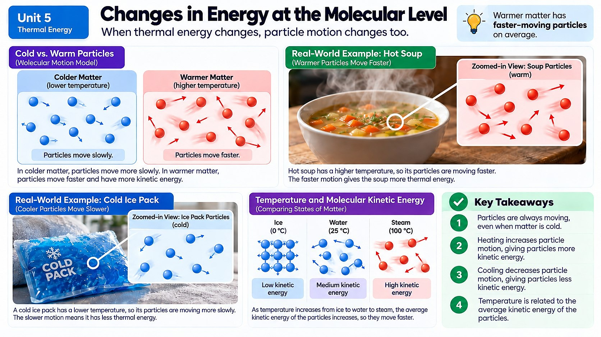

If you could shrink down small enough to ride on a water molecule, what would you feel happening as ice melts into water, and then as that water heats up until it boils away as steam?

Particles Are Always in Motion
Every single substance around you (the air you breathe, the water in your glass, the desk you're sitting at) is made of tiny particles that are constantly moving. In gases, particles zoom around freely in straight lines, bumping into each other and into the walls of whatever container holds them, with lots of empty space between them. In liquids, particles are packed closer together and can slide and flow past one another, which is why liquids can be poured but still hold together. In solids, particles are packed tightly in place and mostly just vibrate: they jiggle back and forth but don't have enough energy to break free from their neighbors and move around.
This particle behavior explains properties you already know from experience. A gas will expand to fill any container because its particles zoom freely with huge gaps between them. A liquid takes the shape of its container but keeps a fixed volume, because its particles can slide around each other but still stay close together. A solid holds a definite shape because its particles are locked into place, only vibrating rather than sliding or flying free.
Where Gas Pressure Comes From
Ever wonder why a balloon pushes outward on your hands, or why a bag of chips puffs up when you take it to the mountains? That's gas pressure, and it comes directly from particle motion. Gas particles are constantly zooming around and slamming into the walls of their container, billions of times per second. Each tiny collision pushes on the wall a little bit, and all those collisions added together create the force we feel as pressure. The faster the particles move (higher temperature) or the more particles there are in a space, the more collisions happen, and the higher the pressure gets.
This is exactly why a car's tire-pressure warning light often flickers on during the first genuinely cold morning of fall. The air sealed inside the tire doesn't leak out overnight: its particles simply slow down as the temperature drops, colliding with the tire's inner walls less forcefully and less often, which lowers the pressure reading even though no air actually escaped. Pump the tire back up to the recommended pressure on a mild afternoon, and by the next freezing morning that same drop in particle speed can leave it looking low again, with zero physical leaks anywhere in the rubber.
Adding or Removing Energy Changes Particle Speed
When you add thermal energy to a substance (say, by heating a pot of water on the stove), that energy doesn't just disappear. It makes the particles move faster, increasing their average kinetic energy. That's exactly what a rising temperature reading means: the particles, on average, are moving with more energy. Remove thermal energy, like when you put a soda in the freezer, and the particles slow down, losing kinetic energy, which shows up as a dropping temperature.
If you keep adding or removing enough energy, something dramatic can happen: the particles gain or lose so much energy that the substance actually changes state. Add enough energy to ice, and eventually the vibrating particles gain enough energy to break free of their fixed positions and start sliding: the ice melts into liquid water. Keep adding energy, and the liquid water particles eventually gain enough energy to escape each other completely and fly free as steam. The same process runs in reverse when you remove energy: gas particles slow down and clump into a liquid, and liquid particles slow down further until they lock into a solid.
Not Every Substance Changes State at the Same Point
Here's something important: different substances change state at completely different temperatures, because it depends on the substance's chemical makeup: how strongly its particles attract each other. Water freezes at 0°C and boils at 100°C, but the metal iron doesn't melt until a scorching 1,538°C, while the gas nitrogen is already boiling at a frigid -196°C. This is why a candle can melt (wax has weak attractions between its particles, so it melts around 60°C) sitting right next to a metal candle holder that stays completely solid at the same temperature. Pressure matters too. Water boils at a lower temperature on a tall mountain, where air pressure is lower, which is actually why recipe instructions sometimes change at high altitudes.
Three Ways Thermal Energy Travels: Conduction, Convection, and Radiation
So far we've mostly talked about thermal energy moving between particles that are touching, called conduction, like heat traveling up a metal spoon left resting in hot soup, one jiggling particle bumping its neighbor and passing energy along the chain. But thermal energy actually has three different ways of getting around, and understanding all three explains a lot of everyday weirdness.
Convection is what happens when heated particles in a liquid or gas actually move from one place to another, physically carrying their extra energy with them. When you heat a pot of water on the stove, water near the bottom warms first, becomes less dense, and rises, while cooler, denser water sinks down to take its place, creating a circulating loop called a convection current. This same process happens on a massive scale in Earth's atmosphere and oceans, driving winds and ocean currents that shape weather patterns around the entire planet.
Radiation is the odd one out: it's the only method of heat transfer that doesn't need any particles to travel through at all. Thermal energy can cross the empty vacuum of space as electromagnetic waves, which is exactly how the sun's energy crosses 150 million kilometers of empty space to warm the Earth. You feel radiation directly whenever you stand near a campfire or hold your hand a few centimeters above a hot stovetop burner without touching it: your skin is absorbing energy that traveled through the air as radiation, not conduction.
Most real situations actually involve all three methods working together at once. A pot of water on a stove heats mostly by conduction from the burner into the metal pot, convection currents then spread that energy through the water itself, and the same pot also radiates a small amount of heat you can feel if you hold your hand near its outside walls.
Real-World Connections
Popcorn Popping
Heating a popcorn kernel adds enough thermal energy to turn the tiny bit of water inside into steam, and the pressure from that fast-moving steam eventually bursts the kernel open.
Why a Pressure Cooker Cooks Faster
A sealed pressure cooker traps steam, raising the pressure and letting water reach a higher temperature than it could in an open pot, giving the particles in the food more energy and speeding up cooking.
Meet the Scientist
Food Scientists
Food scientists study exactly how heat changes the molecules in food: how proteins change shape when cooked, or how steam pressure builds during sealed cooking. Companies that design instant noodles, pressure cookers, or popcorn bags hire food scientists to fine-tune cooking times and temperatures.
Key Vocabulary
Bold, underlined words in the reading above are clickable too. Tap one to see its definition pop out. Or click or tap a card below to reveal the definition.
Explore More
States Of Matter - Solids, Liquids & Gases | Properties of Matter | Chemistry
Chapter Review
1. What is the main difference between how particles behave in a solid compared to a gas?
2. A sealed bag of chips puffs up and looks more inflated when you drive it up into the mountains. What causes this?
3. As you heat a pot of water on the stove, what is actually happening to the water particles as the temperature rises?
4. Iron melts at 1,538°C, while candle wax melts around 60°C. What best explains this huge difference?
5. When liquid water is cooled down and freezes into solid ice, what happens to its particles?
California Science Test (CAST) Practice
A student used an identical heating coil to add exactly the same amount of thermal energy (4,200 joules) to four separate samples of liquid water with different masses, then recorded how much each sample's temperature rose.
| Mass of Water (g) | Energy Added (J) | Temperature Change (C) |
|---|---|---|
| 50 | 4200 | 20 |
| 100 | 4200 | 10 |
| 200 | 4200 | 5 |
| 400 | 4200 | 2.5 |
Using particle motion to explain the pattern in the data, which conclusion is best supported by the evidence?